ICS 311 #11: Balanced Trees (2-4 and Red-Black)
Outline
- Balanced and Multi-Way Trees
- 2-4 Trees (also known as 2-3-4 or (2,4) trees)
- Red-Black Trees
- as a binary representation of 2-4 trees
- as binary search trees
- Insertion in Red-Black Trees
- Deletion in Red-Black Trees
- Comparison of Dictionary Implementations
Readings and Screencasts
The presentation of Red-Black Trees (RBTs) in Cormen et al. omits a major
conceptual motivation: RBTs are a binary representation of a balanced multi-way
tree, and the complex operations on RBTs correspond to simpler operations on 2-4
trees. This motivation is nicely presented by Sedgewick, so read in this
order:
- Sedgewick (1983) chapter 15 on Balanced Trees (posted in Laulima).
- CLRS Chapter 13 once you have understood RBTs in terms of 2-4 trees.
- Screencasts 11A,
11B,
11C,
11D
(also in Laulima and iTunesU)
Although it is a good start, Sedgewick's presentation of 2-4 trees omits some
detail, so I draw on Goodrich & Tamassia's slides widely available on the Web
for the following presentation.
Multi-Way Trees
A multi-way search tree is an ordered tree such that
- Each internal node has at least two children and stores d-1
key-object pairs (ki, oi), where
d is the number of children.
- For a node with children v1 v2
... vd storing keys k1
k2 ... kd-1
- keys in the subtree of v1 are less than
k1
- keys in the subtree of vi are between
ki-1 and ki (i = 2, ...,
d - 1)
- keys in the subtree of vd are greater than
kd-1
- The leaves store no items and serve as placeholders

Multi-way inorder traversal can be defined by extension of BST inorder
traversal to visit the keys in increasing order:
Visit item (ki, oi) of node v between
the recursive traversals of the subtrees of v rooted at children
vi and vi+1.

Searching can similarly be extended to multi-way trees by searching
within each node as well as down the tree:
- At each internal node with children v1 v2
... vd and keys k1 k2
... kd-1:
- if k = ki (i = 1, ... , d - 1):
the search terminates with success
- if k < k1: we continue the search in child
v1
- if ki-1 < k < ki
(i = 2, ... , d - 1): we continue the search in child
vi
- if k > kd-1: we continue the search in child
vd
- Reaching an external node terminates the search unsuccessfully
For example, searching for key 30, we follow the red path:
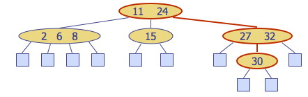
2-4 Trees
Also known as (2,4) or 2-3-4 trees, these are multi-way trees restricted in
two ways:
- Node Size Property: every internal node has at least two children
(one key) and at most four children (three keys).
- Depth Property: all of the external nodes have the same depth. (The
tree is balanced.)
The internal nodes are called 2-nodes, 3-nodes or 4-nodes, depending on the
number of children they have.

Height of 2-4 Trees and Searching
Theorem: A 2-4 tree storing n items has height Θ(lg n).
Let h be the height of a 2-4 tree with n items. The proof is in
two parts, for the upper bound and the lower bound.
Upper bound: The tallest possible tree for a fixed n is
when all internal nodes are 2-nodes, each storing 1 item; i.e., the tree is
equivalent to a binary tree. By the depth property, it is a complete binary
tree. (See also quantitative facts for complete binary trees in Topic 8, but we do the full proof here.)
In such a tree, there are 1=1*20 items stored at depth 0,
2=1*21 items stored at depth 1, 4=1*22 items stored at
depth 2, or more generally 1*2i items at depth i. (I
include the "1*" to represent the number of items stored in a node, which will
change in the second part of the proof, but drop it now.) Since the last level
of a 2-4 tree of height h stores no items (see for example picture above)
we stop at h−1. So the total number of nodes is
Σi=0,h−12i.

Applying formula A5 (shown) with h−1 for n and 2 for
x, the number n of nodes stored in the tallest 2-4 tree of height
h is:
Σi=0,h−12i
= (2(h−1)+1 − 1)/(2−1)
= 2h − 1,
so
n = 2h − 1 or n + 1 ≥
2h
Taking the log base 2 of both sides: lg (n + 1) ≥
h. Thus, h = O(lg n).
Lower bound: The shortest possible tree for a fixed n is
when all internal nodes are 4-nodes, each storing 3 items (by the size
property). By the depth property, all levels are filled out. The proof is
similar to above but with different constants:
There are 3=3*40 items stored at depth 0, 12=3*41
items stored at depth 1, 48=3*42 items stored at depth 2, or more
generally 3*4i items at depth i. Since the last level
of a 2-4 tree of height h stores no items we stop at h−1. So
the total number of nodes is
Σi=0,h−13*4i.
Moving the 3 out and applying formula A5,
3*Σi=0,h−14i
= 3*(4(h−1)+1− 1)/(4−1)
= 4h−1,
so
n = 4h−1
or n + 1 = 4h
Taking the log base 4 of both sides: log4 (n + 1) =
h.
Since the base of logarithms differs only by a constant factor
(see 3.15 of text), in this case by log24 = 2, h =
Ω(lg n).
Putting these results together, h = Θ(lg n).
Since searching in a 2-4 tree with n items requires time proportional
to a path from root to leaves, searching requires O(lg n)
time.
2-4 Tree Insertion
We will examine insertion and deletion briefly to understand the conceptual
cases.
Insert a new item keyed by k into the parent of the leaf reached by
searching for k, and adding an empty leaf node below.
(This differs from binary search trees, which put the key into a new node
below the leaf node reached. Here we insert into the parent of leaf because we
don't put data in the leaves.)
This preserves depth but may cause overflow (a node may become a
5-node).
Example: Inserting 30, we find its position between 27 and 32. However
inserting here causes overflow:

Overflow is handled with a split operation, as illustrated below with
a simpler tree:
- The 5-node containing keys k1, k2,
k3, k4 is split into a 3-node with
keys k1, k2 and a 2-node with key
k4.
- Key k3 is inserted into the parent node (as would be the
case with the tree above).
- Overflow may propagate to the parent node. (This would happen in the tree
pictured above.)
- A new root may be created if the root overflows.

(Note: Sedgewick splits 4-nodes on the way down while searching for the
insertion position, guaranteeing that there will be no overflow. Both Goodrich &
Tamassia and Cormen et al. take the other approach, propagating splits upwards
only as needed. The asymptotic time complexity remains the same.)
Time Complexity of 2-4 Insertion
A tree with n items has Θ(lg n) height. The algorithm
first searches for the insertion location, which requires visiting h =
Θ(lg n) nodes (Θ, not O, because we must go to the leaves in
all cases). The insertion takes Θ(1) time.
If there is overflow, splits (taking Θ(1) time each) may be propagated
upwards to as many as O(lg n) nodes. Since the Θ(lg n)
overrides the possibility of slower growing functions in O(lg n),
insertion is Θ(lg n).
2-4 Tree Deletion
If the entry to be deleted is in a node that has internal nodes as children,
we replace the entry to be deleted with its inorder successor and delete the
latter entry. Example: to delete key 24, we replace it with 27 (inorder
successor):

This reduces deletion of an entry to the case where the item is at the node
with leaf children.
Deletion of an entry from a node v may cause underflow, where
node v becomes a 1-node with one child and no keys. Underflow at node
v with parent u is handled in two cases.
Case 1: An adjacent sibling of v is a 2-node. Perform a
fusion operation, merging v with the adjacent 2-node sibling
w and moving a key from u to the merged node v'.
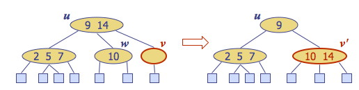
After a fusion, the underflow may propagate to the parent u, for at most O(lg
n) adjustments up the tree.
Case 2: An adjacent sibling w of v is a 3-node or
a 4-node. Perform a transfer operation: move a key from u to
v; and a key from w to u:
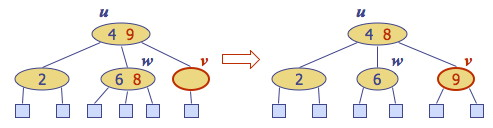
The underflow is eliminated. (Which keys are moved depends on the
configuration. In this example we move the largest key out of each node, but it
could be different if underflow was in a non-rightmost child or it was a right
sibling that was a 3-node or 4-node.)
Time Complexity of 2-4 Deletion
The algorithm first searches for the item to delete, which requires visiting
h = Θ(lg n) nodes on the way down the tree, either to find a
bottom level key to delete, or to find the successor of a key in an internal
node to delete. Underflow is handled with up to O(lg n) fusions and
transfers, each taking Θ(1) time. Thus deletion is Θ(lg
n).
Red-Black Trees
Sedgewick motivates the transition to red-black trees by noting it would be
complex to manage different kinds of nodes (2, 3, and 4), but we already have
a tree representation (binary search trees) that, with the addition of one bit
per node can represent 2-4 trees: Red-Black Trees.
Red-Black Tree Properties
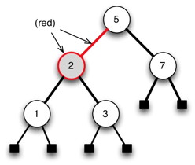
A red-black tree (RBT) is a binary search tree with the following additional
properties:
- Color property: Every node is either red or black. (We can
indicate this either by coloring the node or by coloring its parent
link.)
- Root property: The root is black
- External property: Every leaf is black.
- Internal property: If a node is red, then both of its children are
black. (Hence, no two reds in a row are allowed on a simple path from
the root to a leaf.)
- Depth property: For each node, all the paths from the node to
descendant leaves contain the same number of black nodes (the black
height of the node).
These properties seem rather arbitrary until we consider the correspondence
with 2-4 trees shortly, but first please verify how the properties hold in this
example (where red is represented by grey) ...

Red-Black Tree Representation
A single extra bit is required on each node to mark it as "red" or
"black".
To save space, we can represent the leaf nodes and the parent of the
root node with a single node, T.nil:
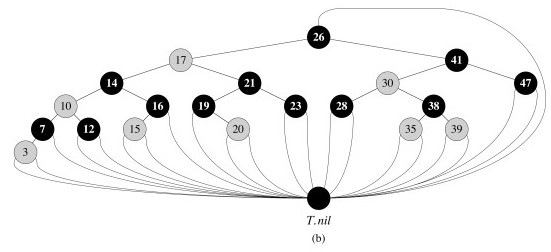
This also simplifies the code, as we can follow pointers without having to
check for null pointers.
We usually don't draw T.nil:

RBTs as a Binary Representation of 2-4 Trees
It would be rather complex to implement and manipulate 2-nodes, 3-nodes and
4-nodes. One motivation for red-black trees is that they provide a binary tree
representation of 2-4 trees, enabling us to manipulate only one kind of
node. (The motivation for starting with 2-4 trees rather than just going to RBTs
directly is that, considered on their own, RBT manipulations are complex and
hard to understand, as you will find out when you read CLRS.) The mapping is as
follows:

Red nodes (and the links from their parents) capture the internal
structure of a (2,3) node;
Black nodes (and the links from their parents) capture the structure of
the (2,3) tree itself.
You should make sure you understand this well before going
on!
RBTs as Binary Search Trees
At the same time as they represent 2-4 trees, RBTs are also Binary
Search Trees: they satisfy the Binary Search Tree property. For example,
here is a RBT: we can search for keys or enumerate elements in order as
usual:
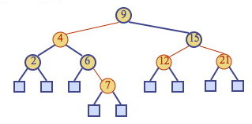
In order to maintain the Red-Black-Tree properties, it will be necessary to
do structural rotations. These rotations are designed to not disrupt the BST
property. For example, this rotation does not disturb the BST ordering of keys
9, 11, 12, 14, 17, 18, 19 (you should verify this before reading on):
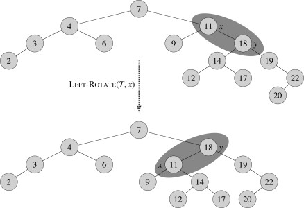
Height of Red-Black Trees and Searching
Theorem: A red-black tree storing n items has height Θ(lg
n).
Proof:
- Let h be the height of a red-black tree with n items
- By property 4, there cannot be more red nodes (and links) on a simple
path from the root to a leaf than there are black nodes (and
links).
- Therefore the black height of the root of the tree is between h
and h/2.
- The black height of the root of the red-black tree corresponds to the
height h' of the 2-4 tree that the red-black tree represents
(since red nodes/links in the RBT represent the internal structure of the
nodes in the 2-4 tree).
- From the theorem concerning the height of 2-4 trees, h' is
Θ(lg n).
- Since h is no more than twice h', h is also
Θ(lg n).
(See Cormen et al. for a proof not relying on 2-4 trees.)
Therefore, searching in a red-black tree with n items takes O(lg
n) time (O rather than Θ as we may find the key in an internal
node).
We now consider insertion and deletion. Please see the CLRS textbook for the
many details of implementation in pseudocode, etc.: here we will concentrate on
seeing how the RBT operations correspond to 2-4 tree operations.
Insertion in Red-Black Trees
To insert an element with key k, perform the insertion for binary
search trees (except that conceptually we insert k in an internal node
with null children, not at a leaf node), and color the newly inserted node
z red, unless it is the root.
This preserves the color, root, external, and depth properties. (You
should check this in the example below.)
If the parent v of z is black, this also preserves the internal
property and we are done.
Else (v is red), we have a double
red (i.e., a violation of the internal property), which requires a
reorganization of the tree. For example, insert 4:

A double red with child z and parent v is dealt with in two
cases. Let w be the sibling of v (and hence the uncle of
z).
Case 1: w is black. The double red is an incorrect
representation of a 4-node. We will fix this with
restructuring. For example, the RBT on the left is an incorrect
representation of the 2-4 tree on the right:

Case 2: w is red. The double red corresponds to an
overflow in the 2-4 tree. We will fix this with recoloring,
which is the equivalent of a 2-4 split. For example:

Restructuring
Restructuring remedies a child-parent double red when the parent red
node has a black sibling. It restores the correct representation (internal
property) of a 4-node, leaving other RBT and BST properties intact:
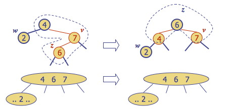
There are four restructuring configurations depending on whether the double
red nodes are left or right children. They all lead to the same end
configuration of a black with two red children:

After a restructuring, the double red has been remedied without violating any
of the other properties (you should verify this): there is no need to
propagate changes upwards.
Notice that the height of the subtree tree has been reduced by
one. This is the operation that keeps the trees balanced to within a
constant factor of lg(n) height, by ensuring that the height of
the RBT is no more than twice that of the (necessarily balanced) 2-4 tree it
represents. Do you see why?
Recoloring
Recoloring remedies a child-parent double red when the parent red node
has a red sibling. The parent v and its sibling w become black and
the grandparent u becomes red, unless it is the root. We recolor a
non-root grandparent in order to maintain equal black height (in case the
grandparent has a sibling).
Recoloring is equivalent to performing a split on a 5-node in a 2-4
tree. (When there is a double red and yet another red in the parent's sibling,
we are trying to collect too many keys under the grandparent.) For example, the
RBT recoloring on the top corresponds to the 2-4 transformation on the
bottom:

Notice that in this example the parent "4" is now red, meaning it belongs to
its parent node in the 2-4 tree. The double red violation may propagate to this
parent in the RBT, which corresponds to the overflow propagating up the 2-4
tree, requiring further repair.
Be aware that 3-nodes and overloaded nodes have more than one possible
representation as a red-black tree, and in particular this affects which key is
promoted by the recoloring. For example, the above overloaded 2-4 node of keys
{2, 4, 6, 7} can also be represented by either of the following trees, and you
can easily verify that recoloring will promote the key 6 in the 2-4 tree.
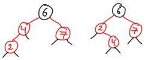
Time Complexity of RBT Insertion
We already established that insertion in 2-4 trees is Θ(lg n)
due to their height. Since RBTs are only at most twice as high, we might expect
this result to transfer, and it does, but it needs to be shown separately since
the manipulations of the RBT are different. So:
- The algorithm first searches for the insertion location, which will
require visiting h = Θ(lg n) nodes on the way down
the tree (since we are searching for a leaf node and the tree is
balanced).
- Adding the item takes O(1).
- Recolorings and restructurings are Θ(1) each, and we perform at
most O(lg n) recolorings and one restructuring
propagating structural changes back up the tree.
Thus insertion is Θ(lg n).
Note: A top-down version of this algorithm is also possible, restructuring on
the way down and requiring only one pass through the tree. See the Sedgewick
reading distributed.
Deletion in Red-Black Trees
To remove item with key k, we first perform the BST deletion (modified
for our representational changes using T.nil).
Because deletion of a node higher in the tree involves replacing it with its
successor, which is then deleted, deletion may involve an internal and an
external node.
We can preserve the RBT properties at the new internal location of the
successor by giving the successor the color of the node deleted, so we need only
be concerned with possible violations of RBT properties at the bottom of the
tree, where the successor was moved from, or where a node without a successor
was deleted.
Let v be the internal node removed, w the external node
removed, and r the sibling of w:
x
\ x
v ==> \
/ \ r
r w
If either v or r was red, we color r black and we are
done (the number of black nodes has not changed).
Else (v and r were both black), we have removed a black node,
violating the depth property. We "fix" this by coloring r double
black, a fictional color. (Intuitively, the black of both v and
r have been absorbed into r.) Now we have the correct "amount" of
black on this path from root to leaf, but the double black violates the color
property.
Fixing this will require a reorganization of the tree. Example: deletion of 8
causes a double black:

A double black corresponds to underflow in 2-4 trees (and here
the images I am borrowing from Goodrich & Tamassia go to greyscale!):
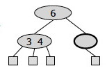
Goodrich & Tamassia's algorithm for remedying a double black node
r with sibling y considers three cases, discussed
below. (Note that these are different from CLRS's four cases!)
Case 1: y is black and has a red child: Perform a RBT
restructuring, equivalent to a 2-4 transfer, and we are done.
For example, if we have the RBT on the left corresponding to underflow in the
2-4 tree on the right:
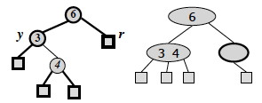
... we do the following restructuring:

Case 2: y is black and its children are both black:
Perform a RBT recoloring, equivalent to a 2-4 fusion, which may
propagate up the double black violation.
If the double-black reaches the root we can just remove it, as it is now on
all of the paths from the root to the leaves, so does not affect
property 5, the depth property.
For example, if we have the RBT on the left corresponding to underflow in the
2-4 tree on the right:

... we do the following recoloring: the black node y is colored red,
and the double black node r is colored ordinary black:

The root of the above subtree takes on an extra black, which propagates only
if it was previously black and is not the root. If it was red it merely turns
black; if it was the root the extra black no longer affects the balanced black
height of the tree.
Case 3: y is red: Perform a RBT adjustment,
equivalent to choosing a different representation of a 3-node, after which
either Case 1 or Case 2 applies.

These are both representations of the following 2-4 tree, but the
transformation allows one of the other cases to apply, reducing duplication of
cases.

The CLRS chapter divides the situation up into four cases: try to see whether
you can map between the above cases and theirs!
Time Complexity of RBT Deletion
The analysis is similar to the previous ones: Θ(lg n) search to
find the deletion point (the item to delete may be in an internal node, but we
always find its successor in any case, which is at the bottom of the tree),
followed by deletion and restructuring O(1) operations that are propagated at
most up O(lg n) levels. Deletion is Θ(lg n).
RBT Animation
You may want to look at these:
-
https://www.cs.usfca.edu/~galles/visualization/RedBlack.html
- Step by step simulation with various controls. You add the nodes and see
what happens. Warning: Their algorithm differs from CLRS, so don't use
this to check your solutions unless you understand the difference!
- http://www.csanimated.com/animation.php?t=Red-black_tree
- A flash animation: slides with voice-over. It goes kind of fast (little
time to figure out what property is being fixed in each case), and does not
let you control slide by slide.
Related Data Structures
AVL Trees, named for their authors, are the oldest balanced
trees. They are binary trees with the requirement that the heights of the left
and right subtree of any given node differ at most by 1. A small amount of extra
storage is needed to record height differences. Their operations are O(lg
n) like RBTs, but may require O(lg n) rotations to rebalance.
Splay Trees are binary trees in which an adjustment moving a node
towards the root called splaying is done after every access (including
search). There are no rules about properties to maintain and no
labels. Amazingly, splaying alone is enough to guarantee O(lg n) behavior
in an amortized sense: we will use these as an example when we cover chapter 17
Amortized analysis. They also make frequently accessed items more
accessible, which can be hugely useful in some applications.
B-Trees, covered in Chapter 18 of Cormen et al. (but not in this
course), are balanced multi-way trees that allow up to M keys per node for large
M. They are used for trees in external (disk) storage, where speed is optimized
by making the size of a node be the same as the size of a block read in by one
disk read.
Comparison of Dictionary Implementations
First, here is a summary of the correspondence between 2-4 and Red-Black tree operations:
Insertion: Remedy double red |
2-4 tree action |
Red-Black Tree Action |
Result |
| Change of 4-node representation |
Restructuring |
Double red removed |
| Split |
Recoloring |
Double red removed or propagated up |
| |
Deletion: Remedy double black |
2-4 tree action |
Red-Black Tree Action |
Result |
| Transfer |
Restructuring |
Double black removed |
| Fusion |
Recoloring |
Double black removed or propagated up |
| Change of 3-node representation |
Adjustment |
Restructuring or recoloring follows |
A comparison of run times.
| |
Search |
Insert |
Delete |
Notes |
| Hash Table |
O(1) expected |
O(1) expected |
O(1) expected |
No ordered dictionary methods. Simple to implement.
|
| Doubly Linked List |
O(n) |
O(1) if not sorted; O(n) if sorted |
Θ(1) if node given, O(n) otherwise |
Simple to implement. |
| Skip List |
O(lg n) with high probability |
O(lg n) with high probability |
O(lg n) with high probability |
Randomized insertion. Simple to implement. |
| Binary Tree |
O(n) worst case, O(lg n) random |
O(n) worst case, O(lg n) random |
O(n) worst case, O(lg n) random |
Moderately complex to implement deletion. |
| Red-Black Tree |
O(lg n) worst case |
Θ(lg n) |
Θ(lg n) |
Complex to implement. |
From this we can see that hash tables have the most efficient expected
behavior when no ordered methods are needed, and red-black trees give us the
best guarantee when ordering matters, although skip lists are a viable
alternative if you have to implement it yourself and want simpler code. But
there is good news! Java
trees implement the CLRS algorithms for red-black trees! "Algorithms are
adaptations of those in Cormen, Leiserson, and Rivest's Introduction to
Algorithms." You don't have
to do it!
Dan Suthers
Last modified: Tue Oct 20 15:24:47 HST 2020
Images are from lecture slides provided by Michael Goodrich and Roberto Tamassia, and from the
instructor's material for Cormen et al. Introduction to Algorithms, Third Edition.